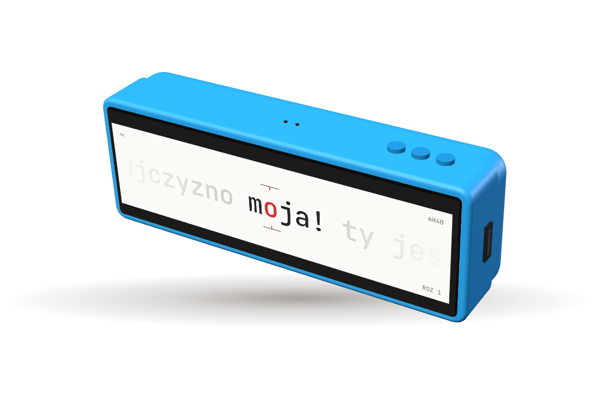
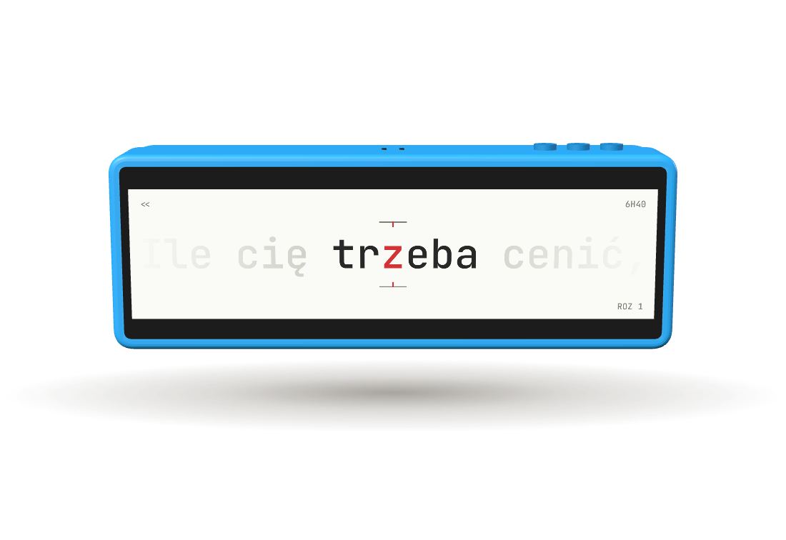
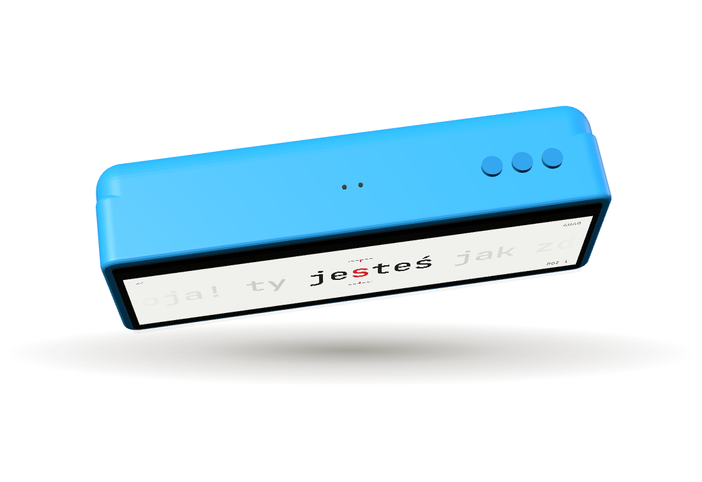
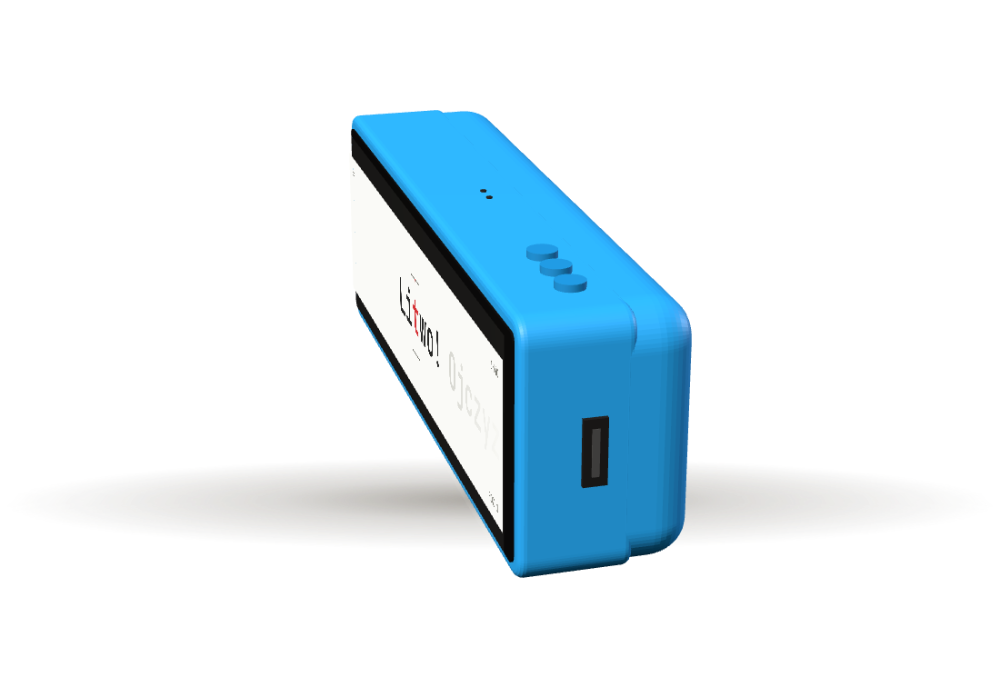
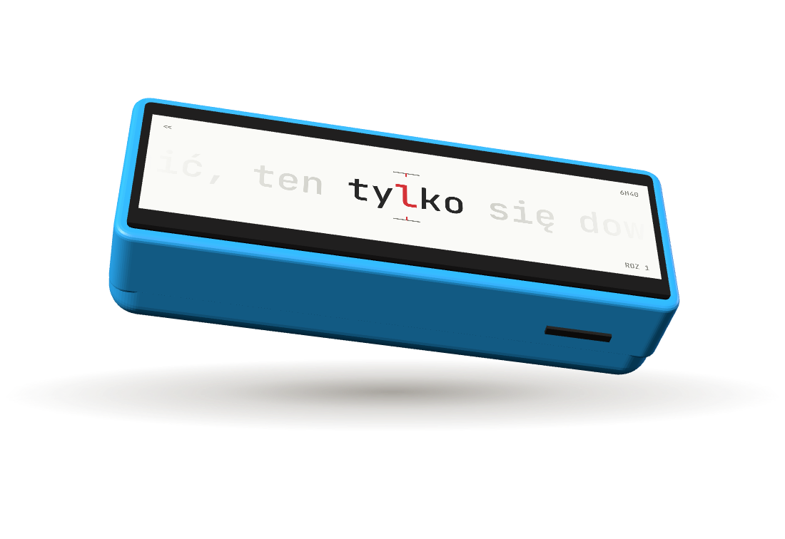
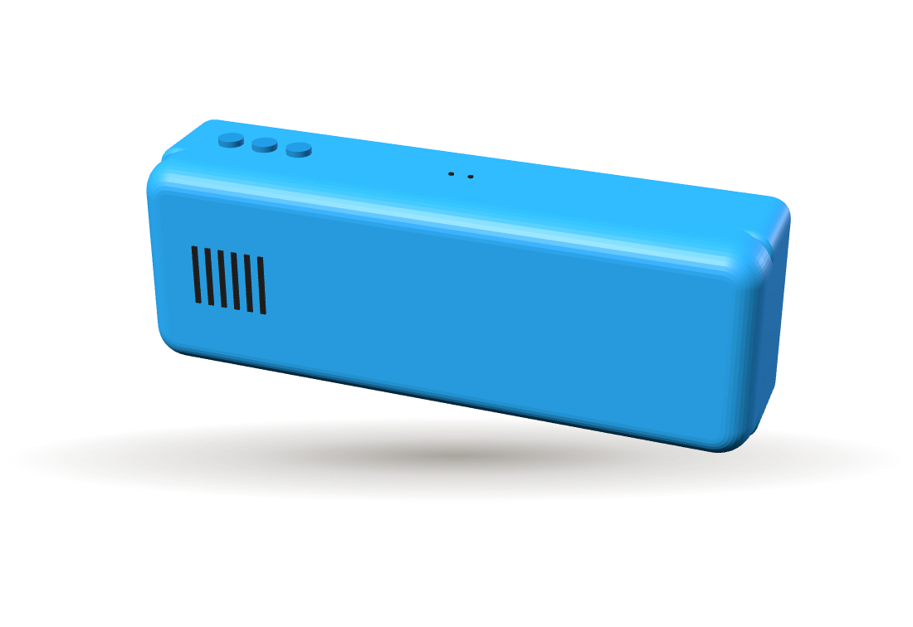

Tylko dla Karola i Janka · nie ma linku ze sklepu
Zdjęcia do zrobienia.
Jedenaście ujęć. Pierwsze sześć to zdjęcia bez tła do galerii sklepu: ustawiasz Flowera dokładnie jak na renderze obok, a ja wycinam tło. Kolejne pięć to zdjęcia z życia, z tłem, bo tło opowiada tam historię.
Wspólne dla zdjęć bez tła
Wszystkie sześć rób w jednej sesji, przy tym samym oknie, w ciągu godziny. Wtedy światło i kolor obudowy wyjdą identycznie na każdym.
TłoBiały brystol A2, wygięty łukiem: górna krawędź przyklejona taśmą do ściany ok. 40 cm nad stołem, dolna leży płasko na blacie. W kadrze nie może być widać linii między ścianą a stołem. Tylko biały, nie kremowy i nie szary.
ŚwiatłoJedno okno po lewej stronie stołu, ok. 1 m od czytnika. Dzień pochmurny albo okno zasłonięte firanką lub papierem do pieczenia. Pora 10:00–14:00. Wszystkie lampy w pokoju wyłączone, żeby nie mieszać barw światła.
BlendaBiała kartka A4 postawiona pionowo po prawej stronie czytnika, 20 cm od niego, oparta o kubek. Rozjaśnia prawą stronę obudowy, żeby nie zlała się z cieniem.
CieńMa być ledwo widoczny. Mocny cień utrudnia wycinanie, a swój, taki sam na każdym zdjęciu, dodam ja.
AparatObiektyw 2× (jeśli jest), ok. 40 cm od czytnika. Telefon na statywie albo na stosie książek, samowyzwalacz 3 s. Bez trybu portretowego i bez filtrów. Stuknij w ekran czytnika na podglądzie, przytrzymaj (blokada ostrości i jasności) i zjedź jasnością o ok. −0,7.
KadrCzytnik zajmuje ok. 70% szerokości kadru. Wokół zostaw wolne miejsce, nic nie może go dotykać ani wchodzić w kadr.
CzytnikPrzetarty mikrofibrą z każdej strony, bez kurzu w szczelinach przycisków i głośnika. Bez kabla. Bateria powyżej 80%.
EkranMotyw Jasny, jasność 80%, bateria w czytaniu wyłączona. Tryb RSVP, czytanie zatrzymane pauzą na słowie z 5–7 liter, z czerwoną literą na środku.
OdbiciaEkran odbija to, co stoi przed nim. Ubierz się na biało albo szaro i odsuń z pola za sobą kolorowe rzeczy.
PlikiNajwyższa rozdzielczość. Wyślij oryginały (Dysk, mail jako plik), nie przez komunikator, bo ten je kompresuje.
Bez tła: galeria sklepu

- Ustawienie
- Czytnik leży na plecach, ekranem do góry. Obróć go tak, żeby port USB-C patrzył w prawo i lekko do ciebie, a przyciski na górnej krawędzi były widoczne po prawej.
- Aparat
- Ok. 25° nad blatem, czyli trochę niżej niż wzrok osoby siedzącej przy stole. Na wprost lewej połowy czytnika.
- Ekran
- Włączony, pauza na słowie.
- Ostrość
- Na czerwonej literze.

- Ustawienie
- Czytnik stoi pionowo na dłuższej krawędzi (tej z kartą microSD), ekranem prosto do aparatu. Podeprzyj go od tyłu gumką do mazania albo kawałkiem plasteliny, której nie widać.
- Aparat
- Dokładnie na wysokości środka ekranu, na wprost. Krawędzie czytnika mają być równoległe do linii siatki w aparacie.
- Ekran
- Włączony, pauza na słowie.
- Uwaga
- Na wprost najłatwiej złapać odbicie siebie i telefonu w ekranie. Odsuń się i przybliż obiektywem 2×.

- Ustawienie
- Czytnik leży ekranem do góry, górną krawędzią (z przyciskami) do aparatu.
- Aparat
- Wysoko, ok. 60° nad blatem, patrzy z góry na ekran i górną krawędź jednocześnie.
- Ostrość
- Na środkowym przycisku. Widać trzy przyciski i dwie kropki mikrofonów na środku krawędzi.

- Ustawienie
- Czytnik leży ekranem do góry, prawym bokiem (z pionowym portem USB-C) prawie prosto do aparatu, lekko obrócony, żeby było widać kawałek ekranu.
- Aparat
- Ok. 20° nad blatem.
- Ostrość
- Na porcie USB-C. Port na środku kadru.

- Ustawienie
- Czytnik leży ekranem do góry, dolną krawędzią (z kartą microSD po prawej) do aparatu.
- Aparat
- Nisko, ok. 15° nad blatem.
- Ostrość
- Na szczelinie karty. Karta włożona do końca.

- Ustawienie
- Czytnik leży ekranem w dół na czystej ściereczce (żeby nie porysować ekranu), tyłem do góry. Sześć szczelin głośnika po lewej stronie kadru.
- Aparat
- Ok. 30° nad blatem, od strony górnej krawędzi, tak żeby było widać przyciski.
- Ostrość
- Na szczelinach głośnika.
Z życia: historia i strona Historia
Szkic: dłoń trzyma Flowera poziomo, kciuk na przycisku, tło rozmyte
- Ustawienie
- Prawa dłoń trzyma czytnik poziomo, cztery palce pod spodem, kciuk na środkowym przycisku. Dłoń na wysokości klatki piersiowej, jak przy czytaniu.
- Tło
- Jasna, gładka ściana albo zasłona ok. 1,5 m za dłonią, rozmyta. Bez ramek, gniazdek, kabli.
- Dłoń
- Czyste, krótkie paznokcie, bez biżuterii. Rękaw swetra w beżu, szarości albo granacie przy dolnej krawędzi kadru.
- Światło
- Okno z lewej strony osoby. Cień dłoni pada w prawo.
- Aparat
- Druga osoba, ok. 50 cm, lekko z góry, jakby patrzyła przez ramię. Kadr pionowy 4:5. Ostrość na ekranie.
Szkic: przednia kieszeń jeansów, Flower wystaje o 1/3, ekran świeci
- Ustawienie
- Przednia kieszeń średnio-niebieskich jeansów, bez dziur i przetarć. Czytnik włożony pionowo, wystaje o 1/3 długości, ekranem do aparatu, przechylony o 5–10°.
- Kadr
- Od paska do połowy uda, pion 4:5. Bez twarzy i bez telefonu w drugiej kieszeni. Koszulka w bieli albo beżu, wpuszczona albo krótka.
- Światło
- Osoba stoi bokiem do okna, okno po lewej stronie kadru.
- Ekran
- Włączony, pauza na słowie.
Szkic: ciemny pokój, osoba na boku, Flower w jednej dłoni, ciepła poświata zza głowy
- Ustawienie
- Osoba leży na boku, policzek na białej poduszce, czytnik w jednej dłoni ok. 30 cm od oczu. W kadrze: dłoń, czytnik, kawałek poduszki i kołdry. Twarz poza ostrością albo poza kadrem.
- Światło
- Pokój ciemny. Mała lampka z ciepłą żarówką za głową osoby, poza kadrem. Drugie źródło światła to sam ekran.
- Ekran
- Motyw Nocny, jasność 40%.
- Aparat
- Statyw albo telefon oparty. Tryb nocny wyłączony, bo rozmywa litery. Ostrość na ekranie.
Szkic: osoba w kolejce albo w tramwaju czyta z jednej ręki, zdjęcie zza ramienia
- Ustawienie
- Osoba stoi i czyta, trzymając czytnik jedną ręką. Druga ręka trzyma poręcz albo kubek. Zdjęcie zza ramienia, z boku.
- Tło
- Rozmyte sylwetki innych ludzi. Bez logo sklepów i reklam.
- Uwaga
- Obcych z rozpoznawalną twarzą nie może być w kadrze bez ich zgody. Najprościej zagrać kolejkę ze znajomymi.
- Kadr
- Poziom 4:3, reportażowo. Tu ostrość liter nie jest ważna, liczy się scena.
Szkic: widok z góry, otwarte pudełko z Flowerem, obok zwinięty kabel, karta z kodem, instrukcja
- Ustawienie
- Z góry, na białym brystolu. Lewy górny róg: otwarte pudełko z czytnikiem w gąbce. Prawy górny: kabel USB-C zwinięty w luźne kółko i związany. Dół: instrukcja i karta z kodem rabatowym.
- Siatka
- Przedmioty pod kątem prostym do siebie, odstępy ok. 3 cm, nic nie wychodzi poza kadr.
- Ekran
- Czytnik wyłączony.
- Uwaga
- Zanim zrobisz to zdjęcie, zaprojektuję kartę z kodem i instrukcję do druku.
Film (opcjonalnie, ale warto): pion 9:16, 20–40 sekund, „jak składamy Flowera”. Trafi na stronę Historia i jako ostatni kafelek galerii na stronie zakupu.
Zdjęcia wrzuć do jednego folderu na Dysku i daj znać. Wytnę tło z 1–6 i 11, wyrównam kolor obudowy i podmienię rendery w sklepie.
Wróć do podglądu sklepu